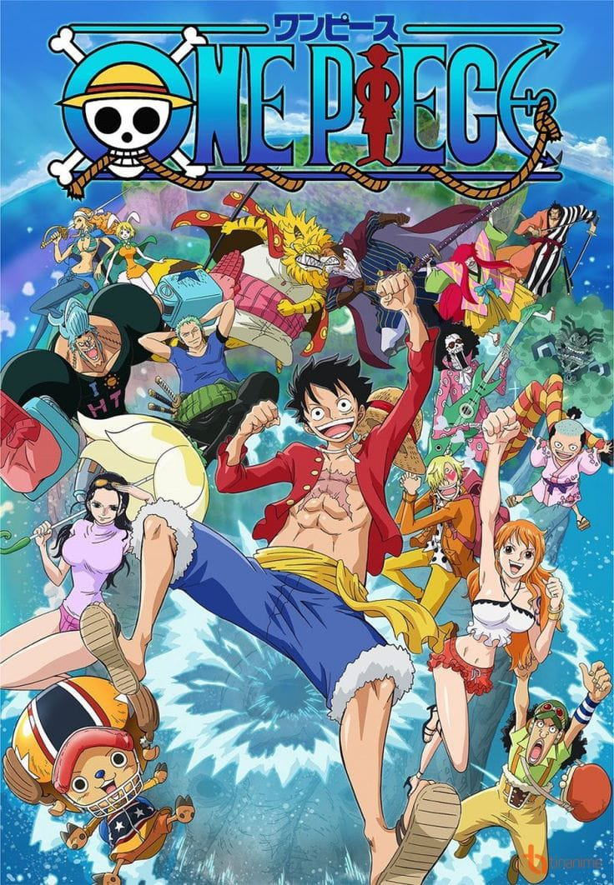
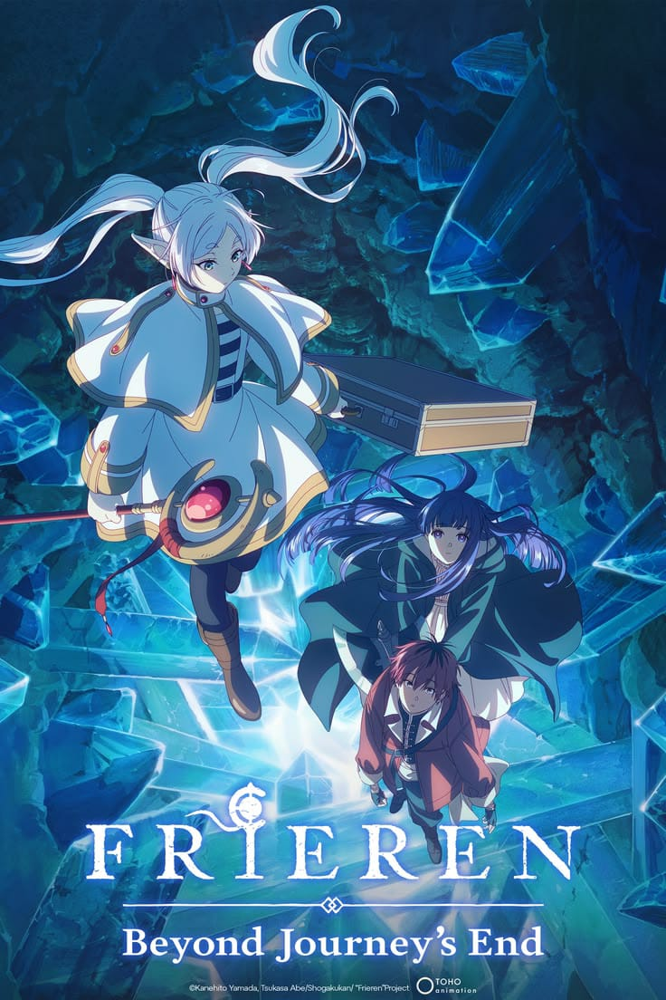
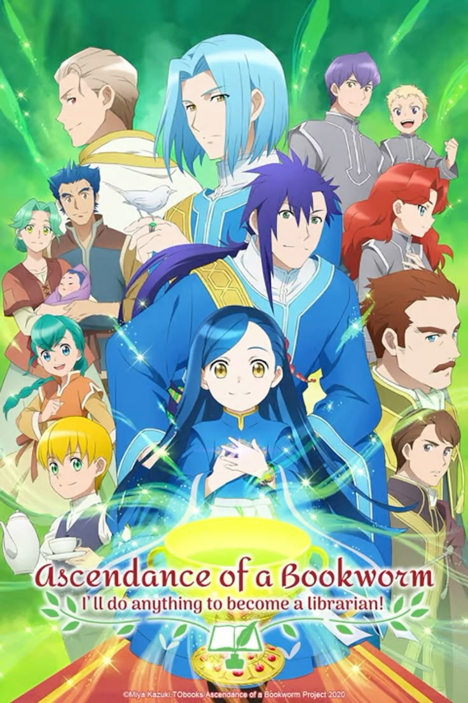

Animes en emision
Aquí encontrarás algunos animes que se encuentran en emisión.

ONE PIECE
FRIEREN THE APOTHECARY DIARIES
THE APOTHECARY DIARIES

ASCENDANCE OF A BOOKWORMAquí encontrarás algunos animes que se encuentran en emisión.

ONE PIECE
FRIEREN
THE APOTHECARY DIARIES

ASCENDANCE OF A BOOKWORM